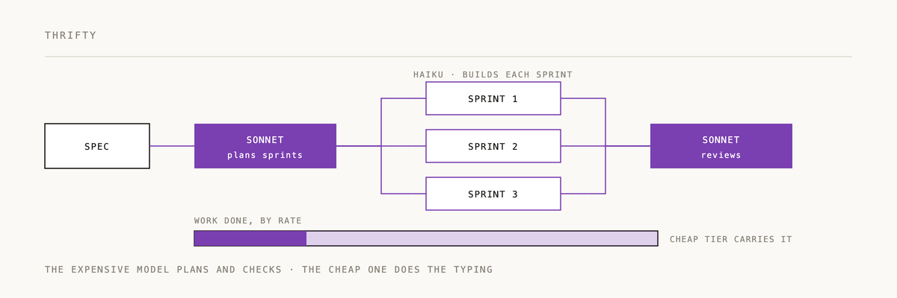

thrifty

Tiered-delegation task execution for Claude Code. A planner model writes the spec
into sprints, a cheap model executes and self-verifies against the gate — same gate
quality as the strong model, ~64% cheaper (≈⅓ the cost) (benchmarked).
Offload each sprint of work to the weakest model that can do it correctly.
The idea
Most of the work in a task is pattern-following execution, not reasoning. thrifty
concentrates planning in one model and pushes execution down to a cheap one, with the
gate (tests / a checklist) as the trust contract — independently re-run, never
self-reported. This generalizes "tests as the source of truth" to any task, code or not.
Benchmarked architecture
The configuration that won the cost/quality bake-off (spec → working code, 7 tasks across
JS / Python / Go / prose, gate-verified — see eval/RESULTS.md andexperiments/):
spec ──▶ Sonnet writes contract (pins cross-sprint + genuinely-ambiguous decisions)
+ sprints.jsonl (one self-contained unit of work each)
│
▼
Haiku one cached agent builds every sprint, runs the gate, and self-fixes
│
▼
Sonnet a SCOPED patch — only if a specific failure is left (in practice: never;
the Haiku agent self-fixed to green on all 7 tasks)
Result: ~64% cheaper than Opus building the same spec, at equal gate quality — on
large, multi-unit builds (the win grows with size). On trivial builds the planning
overhead makes thrifty cost more than a single capable agent, so there's a crossover
below which you should just use one strong model directly (see Usage). Two
things make it work: a single cached agent reuses the contract across turns (cheap, no
cold-call bloat), and the contract pins every decision that crosses a sprint boundary
so the executor never invents a system-level choice (leave one ambiguous and the executor
writes contradictory tests). Opus is not in the execution loop.
Install
thrifty ships as a Claude Code plugin (bundles all six skills):
/plugin marketplace add 2389-research/thrifty
/plugin install thrifty@thrifty
Then trigger it with "thrifty", "delegate this", or "tiered build".
The subagent-based skills (thrifty,thrifty-plan/brief/execute/check) need no external runtime. The leanthrifty-dispatchflow shells out toskills/thrifty-dispatch/dispatch.py, so it additionally requires Python 3 onPATH.
To hack on it locally instead, symlink the skills into ~/.claude/skills/:
for d in skills/*/; do ln -s "$PWD/$d" ~/.claude/skills/; done
Lineage
thrifty generalizes three existing systems to arbitrary tasks:
- speed-run — offload first-pass generation to a fast model; the strong model
- pipelines/local_code_gen — a strong architect pins every cross-sprint decision
- Noospheric Orrery — proof of the philosophy: Sonnet never extracts; Haiku
Where local_code_gen writes 600-line byte-pinned contracts for a tiny local
model (qwen3.6 / gemma), thrifty deliberately sits well above that floor. Haiku
is far stronger, so the contract pins only what is cross-sprint AND genuinely
ambiguous — the seams, not the interiors. Since the planner's (Sonnet) output is the
expensive part, terseness is the goal: pin the few decisions two capable sprints
would otherwise diverge on, and let Haiku infer the rest.
Skills
| Skill | Role | Model | Runs as |
|---|---|---|---|
thrifty | orchestrator (subagent flow) | — | this session |
thrifty-dispatch | orchestrator (lean dispatch flow — default) | — | this session |
thrifty-plan | director's planning discipline | Sonnet | this session |
thrifty-brief | expand a unit spec into a brief (split tier) | Sonnet | dispatched subagent |
thrifty-execute | execute one unit | Haiku | dispatched subagent |
thrifty-check | verify + fix one unit | Sonnet | dispatched subagent |
Planning tiers (who writes the briefs)
- direct — the architect writes the contract and every brief. Fewest moving
- split — the architect (director) writes the contract + terse unit specs;
local_code_gen's
contract → sprint flow). Brief-writing runs in parallel and the architect's context
stays lean. Best for many sprints (≳ 6) / mechanical briefs / scale.
- hybrid — the architect writes the 1–2 subtle sprints' briefs, delegates the routine rest.
Rough rule: direct below ~5 sprints, split above — but it's per-task, and the subtle
sprints can stay direct even in a split run. Authority follows the tier: the architect
owns the contract (cross-sprint), the brief-writer owns its unit (within-sprint), so a
within-sprint fix stays with a Sonnet brief-writer and only contract defects reach the
architect.
Usage
Say "thrifty", "delegate this", or "tiered build" on a multi-part task.
Which flow runs: the agent should try the lean dispatch flow (thrifty-dispatch)
first — it's the benchmarked, cheapest path — and fall back to the subagent flow below
only when the dispatch runtime is unavailable (python3 / claude -p can't be spawned) or
the task genuinely needs per-unit parallel verification. Cost ordering, measured: *dispatch
< subagent < direct-strong-model on large builds; on trivial builds the planning overhead
makes either thrifty flow cost more than just one capable agent — so below ~a few real
units, skip thrifty. The thrifty skill now points the agent at dispatch by default.
For the subagent flow, the orchestrator will: frame the goal, plan (write CONTRACT.md + per-sprint briefs
with acceptance criteria, confirmed with you), dispatch Haiku executors in parallel
where dependencies allow, verify each unit by criterion type (run the gate for
runnable criteria; spend a Sonnet read only when a gate fails or there are
assertional criteria to judge), apply a bounded tiered fix loop, then do a final
coherence pass and report.
Verification is adaptive (don't pay Sonnet to read passing code)
- Runnable criteria (tests, build, a CLI exit code) → the orchestrator just
So for code-with-tests the common path costs no checker tokens; Sonnet is spent only
on failures and on things only a reader can judge.
Artifacts land in docs/thrifty/<task-slug>/ (CONTRACT.md, briefs/,LEDGER.md) so a run is auditable and resumable.
Decomposition modes
Not every task is "one file per agent." The architect picks a mode by how cohesive
the final artifact must be:
- partition — sprints own separate regions/files, run in parallel, architect
- relay — one shared artifact extended segment by segment, sequentially,
- layered — role-specialized passes over the whole artifact (draft → continuity
A single artifact with no cross-sprint seams skips the contract entirely — one brief,
one execute, one check (or just don't use thrifty).
Fix loop (bounded, terminates)
The checker diagnoses (pass / local / execution / brief); the orchestrator
decides and counts:
- surgical (Sonnet, in place) — ≤ 2
- executor redo (fresh Haiku + notes) — ≤ 1
- architect replan (revise contract/brief) — ≤ 1
- otherwise surface to the human
A regression guard rolls back any fix that breaks a previously-passing criterion.
Design & evidence
The benchmarked architecture and the full cost/quality investigation (including the
approaches we tried and rejected) are in eval/RESULTS.md; reproducible
scripts + captured data are in experiments/.
Two implementations — use dispatch by default
Recommended: the lean dispatch flow (thrifty-dispatch). It is the benchmarked
architecture and the one the ~64% cost claim is measured on. Reach for the subagent
substrate only when you specifically need per-unit parallel verification — and know
it costs materially more (see why below).
- Lean dispatch flow (benchmarked, recommended) —
thrifty-dispatch: Sonnet writes
contract.md + sprints.jsonl, then dispatch.py runs bare claude -p calls that
hard-pin every codegen sprint to Haiku (the plan's tier is ignored in code) and write
outputs to disk; the orchestrator reads only a tiny manifest. ~64% cheaper than Opus at
equal gate quality. This is the architecture diagrammed at the top.
- Subagent substrate (richer, pricier) — the
thrifty-*skills above (Sonnet architect
Why it costs more (structural, not a bug): every subagent spawn carries ~40k of
Claude Code harness context, and each subagent's report lands back in the orchestrator's
context — which is then re-read every turn, so cost compounds with the number of units.
The dispatch flow avoids both (bare calls, outputs to disk, manifest-only reads).
Executor-tier caveat: unlike dispatch, this path cannot force the executor model in
code — it asks the orchestrator to dispatch with model: "haiku", which a runtime may
silently ignore (falling back to Sonnet/the default). Verify the
executor ran on before trusting any cost figure — and note a subagent's self-reported*
model is only a weak signal (a silently-substituted model often still claims to be Haiku);
the authoritative check is observed cost/usage. The ledger's savings line is an estimate,
not a measurement. (See the "Verify the executor tier" step in
thrifty's Step 3.)
Status
v0.1 — benchmarked. The lean dispatch flow is ~64% cheaper than Opus building the same
spec, at equal gate quality, across 7 tasks (JS / Python / Go / prose). Evidence:eval/RESULTS.md (main findings + full journey) andexperiments/ (reproducible scripts + captured cost data).